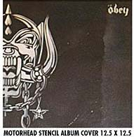
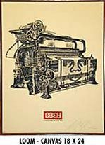
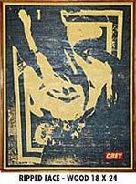
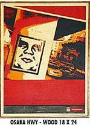
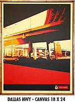
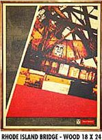
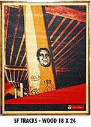
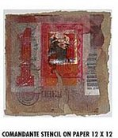

Prints and the Revolution
From The Giant: The Definitive Obey Giant Site
{kind=link}
"Prints and the Revolution" was a Shepard Fairey show at the OX-OP Gallery in Minneapolis, MN, that ran from June 7th-30th, 2003.
From OX-OP Gallery:
OX-OP ARTS PRESENTS: SHEPARD FAIREY/OBEY GIANT OUTDOOR INSTALLATION AND ART SHOW – JUNE 7TH-30TH
Artist Reception Saturday June 7, 7:00 pm – 10:00pm
MINNEAPOLIS, MN – OX-OP Arts welcomes artist Shep Fairey and his trademark OBEY/GIANT visual propaganda to the Twin Cities, beginning Saturday, June 7th. Last seen at the Walker Art Center where he spoke to a standing-room-only crowd, he returns to create an outdoor installation that will turn the OX-OP building itself into a full-scale artistic onslaught (screen prints and original art will be for sale inside).
According to Carlo McCormick, Senior Editor of Paper Magazine and frequent contributor to Art Forum and Juxtapoz, “Artist Shepard Fairey has long been haunting consumer culture with an ambitious mocking street campaign featuring an omnipresent Andre the Giant. Fairey began his epic satire on the science of celebrity endorsements and the alchemy of suggesting desire back in 1989, while he was still a student at The Rhode Island School of Design. Since then his propaganda has been proliferated through stickers, clothing, skateboards, posters, stencil-based graffiti and even a documentary film, to spread over the United States and the unsuspecting world at large. There’s no telling what these images are selling, but whatever it is, it’s all so seductive that it’s hard to resist.”
After 14 years of non-stop mayhem, his ongoing “Obey Giant” project remains as much of an utter provocation as ever. Currently based in Los Angeles, where his design firm Black Market is landing high-level corporate accounts from companies eager to see how his commercial parodies can help sell their products, Fairey’s rising success has helped transform his once home-made Xerox style into lush multi-colored screen prints. His work has been displayed at The New Museum of Design, New York, NY; San Diego Museum of Contemporary Art, San Diego, CA; Museum of Modern Art, San Diego, CA; Victoria & Albert Museum, London, UK; and the Holly Solomon Gallery, New York, NY.
Shepard Fairey is the second grafitti-based artist to debut at OX-OP, with street writer turned fine-artist Dalek having shown in March. And in April, Gary Baseman opened to a full house. Just four months old, OX-OP is at the forefront of a visceral new art movement that combines Low Brow, underground comix, pixel, rock posters, graphic design and of course, graffiti art. According to Gallery owner/curator Tom Hazelmyer, “the idea is to bring what’s going on nationally to the Twin Cities and give the locals a chance to get in on the ground floor.” As a further nod to the locals, the June 7th gallery opening is an exclusive opportunity for attendees to preview the work before it goes on sale on-line nationally.
OX-OP is open to the public Tuesday through Saturday 4-8pm as well as by appointment, with new shows opening the first Saturday of every month.
FOR FURTHER INFO AND PHOTOS, CONTACT:
Rob or Tiff 612-259-0085 wes@ox-op.com tiff2ox-op.com
OX-OP gallery
1111 Washington Ave S.
(Behind Grumpy’s Bar)
Minneapolis, MN 55415
Ph. 612-259-0085
www.ox-op.com
An article from Pulse of the Twin Cities:
Andre the Giant wants you to OBEY
By Andrew - Date: 2003-06-18 13:03:03
story and photos by Nick George
It was proven that Andre the Giant has a posse in Minneapolis by the packed OX-OP Gallery opening of Shepard Fairey’s “Prints and the Revolution” show. Fairey’s Andre the Giant sticker campaign started as a Xeroxed sticker back in 1989, but has since exploded onto everything from books to shoes. These products have generated a good deal of profit for Fairey. One poster from the show mimics a Federal Reserve stamp and reads “Obey Federal Reserve, Cash for Chaos.” Fairey is definitely getting paid for the chaos he is creating. According to his Manifesto, the “campaign can be explained as an experiment in Phenomenology.”
{kind=link}
While the artist has been shown in many museums and galleries, his most notorious work consists of posters wheat pasted to public spaces. Over the last decade Fairey has managed to enlarge the size of his street posters by printing them in panels and then applying them one by one to create the whole image. He often uses a ladder to apply his posters because he likes to get them as high as possible. “People (graffiti writers) are usually lazy. They’ll only put stuff up as high as they can reach,” Fairey said in 2000.
The current OX-OP Gallery show contains over 30 of Fairey’s posters that are printed on steel, wood, canvas and paper. The outside of the gallery has also been covered with a collage of posters that is similar to the work Fairey puts on the street.
The posters’ numerous subjects include hip-hop, revolution, cityscapes and punk rock. The paper screen prints are on sale for $40, but prints on other materials cost $500. Also for sale are two “Obey Giant” books and even Zippo lighters.
{kind=link}
“My goal with the work in public spaces isn’t to vandalize unnecessarily. It’s just to get the imagery out there. I do the backs of signs, electrical boxes. I do any abandoned property where I don’t think it’s going to lower property value. But I never do private property of like a business or anything that’s going to cause that person unnecessary grief,” Fairey said.
The day after making this statement at the Walker Art Center in 2000, Fairey was arrested in Minneapolis for wheat pasting a poster to an electrical box. This arrest didn’t stop Fairey from doing more of the same during his recent visit. “Obey Giant” posters, stencils and stickers have sprung up all over the Twin Cities but many of them have already been removed. Over the years he has been arrested for everything from criminal mischief and malicious destruction of public property to disorderly conduct.
In 1995, Fairey began to include the word “Obey” into his designs. Fairey’s original sticker says “Andre the Giant has a Posse,” but the sticker is no longer sold for fear of a lawsuit from the deceased wrestler’s estate. Today the original sticker design can only be obtained free of charge from Shepard Fairey himself.
The OX-OP Gallery is open from 4-8 P.M. Tues.-Fri. and Sat. 1-5 P.M. The gallery is located behind Grumpy’s Bar at 1111 Washington Avenue South. The show runs through June 30. For special viewing appointments or questions, call 612-259-0085.
Works from "Prints and the Revolution." All works were $500.00.
|  |
{kind=link}
{kind=link}
{kind=link}
|  |  |  |
{kind=link}
{kind=link}
{kind=link}
{kind=link}
|  |  |  | 
|
{kind=link}
{kind=link}
{kind=link}
|  |
{kind=link}
{kind=link}
{kind=link}
{kind=link}
References:
| Ox-Op Gallery | Pulse of the Twin Cities | MNartist.org |
© Copyright |
|---|
| This page contains an image or images of drawings, paintings, photographs, prints, or other two-dimensional works of art, for which the copyright is presumably owned by either the artist who produced the image, the person who commissioned the work, or the heirs thereof. It is believed that the use of low-resolution images of works of art for critical commentary on the work in question, the artistic genre or technique of the work of art, or the school to which the artist belongs on the English-language website thegiant.org, hosted on servers in the United States, qualifies as fair use under United States copyright law. |